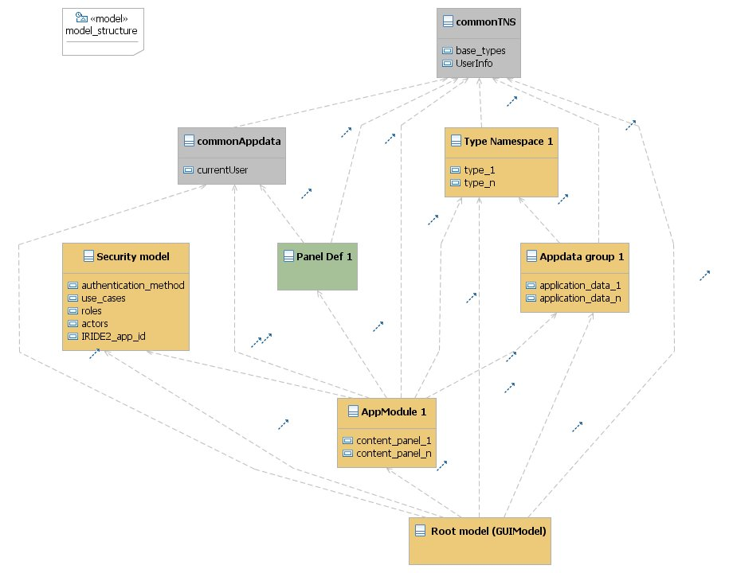

Guigen - Strutturazione dei vari modelli dell'applicazione
La descrizione di un'applicazione guigen è strutturata in differenti modelli ciascuno dei quali descrive
una porzione delle caratteristiche dell'applicazione stessa.
Ciò permette di gestire in modo più efficente e strutturato il modello complessivo, anche in caso
di lavoro in team.
Struttura complessiva dei modelli e delle dipendenze
Nell'immagine seguente è mostrata la struttura delle dipendenze tra i vari sotto-modelli di cui è
composto il modello che descrive un'applicazione guigen:

Nel disegno:
- ciascuna classe corrisponde ad un differente file di modello:
- il modello principale(nell'es: [root model]) contiene un istanza di GUIModel
- il modello [security model] contiene le informazioni che caratterizzano il
modello di sicurezza dell'applicazione (classe SecurityModel)
- il modello [commonTNS] contiene un TypeNamespace che rappresenta una libreria
di tipi base utilizzabili da tutti gli applicativi
- il modello [commonAppdata] contiene un AppDataGroup che raccoglie un insieme di
ApplicationData di utilizzo comune a tutti gli applicativi (es. le informazioni dell'
utente correntemente collegato)
- il modello [app module 1] contiene la modellazione di una porzione di schermate (ContentPanel)
solitamente rerlative ad una porzione di casi d'uso dell'applicativo (solitamente un'applicazione non
banale contiene più, di un AppModule)
- il modello [appdata group 1] contiene la modellazione di un insieme di ApplicationData,
solitamente (ma non necessariamente) relativi ad un AppModule; (solitamente un'applicazione non
banale contiene più di un AppDataGroup)
- il modello [type namespace 1] contiene la modellazione di un package di tipi/strutture dato
(solitamente un'applicazione non banale contiene più di un TypeNamespace)
- il modello [panel def 1] contiene la modellazione di un frammento di UI riusabile (PanelDef).
Un frammento di questo genere può essere fornito come libreria da un progetto esterno
(ad esempio per definire un pannello standard per la gestione delle informazioni di avanzamento di una istanza di
processo BPM) oppure essere modellato all'interno del progetto stesso, per essere utilizzato in più schermate.
- ciascuna dipendenza tra due classi corrisponde ad una dipendenza tra due file di modello, che si realizza
in EMF:
- mediante l'inclusione del modello da cui si dipende nel modello che presenta la dipendenza tramite
il comando "load resource..." nell'editor strutturato (es: dall'editor del modello app module 1
includere la risorsa relativa al modello app data group 1)
- referenziando (dove necessario) un oggetto appartenente al modello incluso in una property di
un oggetto appartenente al modello che include (es. referenziando un ApplicationData del modello
appdata group 1 in un data binding di un Widget contenuto in una schermata
(ContentPanel) descritta nel modello app module 1)
- i modelli rappresentati con il colore giallo sono modelli specifici dell'applicativo, mentre i modelli
rappresentati in grigio sono da considerarsi librerie da includere nel progetto
Alberatura dei file di modello
In una applicazione non banale sono tipicamente presenti vari AppModule, vari AppDataGroup,
vari TypeNamespace, oltre a poter avere la necessità di includere uno o più modelli di Paneldef.
Di conseguenza l'insieme di modelli che complessivamente descrivono l'applicazione può anche avere una elevata
cardinalità.
In pratica il numero complessivo dei modelli dipende da:
Nmod: numero degli AppModuleNdat: numero degli AppDataGroup specifici dell'applicazioneNtns: numero dei TypeNamespace specifici dell'applicazioneNpdef: numero dei PanelDef inclusi ed utilizzati nella struttura UI dell'applicazione
ed è calcolabile con la seguente formula:
Ntot = Nmod + Ndat + Npdef + 4
Di conseguenza è opportuno addottare anche una strutturazione del file system secondo una alberatura simile alla seguente:
- <cod_prodotto>
- <componente_web>
- <componente_web>.guimodel
- securityModel.guimodel
- modules
- <module_1>_module.guigen
- ...
- <module_Nmod>_module.guigen
- appdata
- <appdata_1>_appdata.guigen
- ...
- <appdata_Ndat>_appdata.guigen
- tns
- <package_1>_tns.guigen
- ...
- <package_Ntns>_tns.guigen
- fragments
- <panel_def_1>_pdef.guigen
- ...
- <panel_def_Npdef>_pdef.guigen
- commonTNS.guimodel
- commonAppdata.guimodel